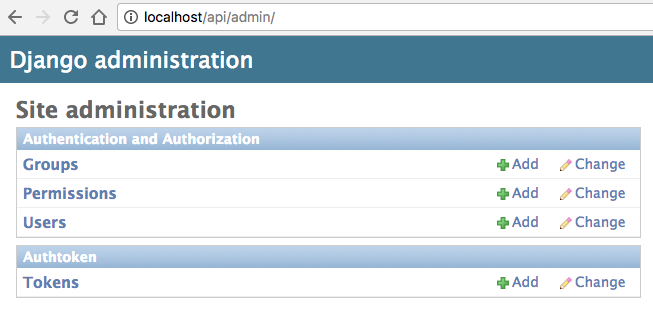
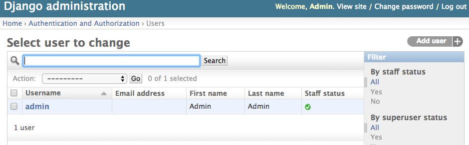
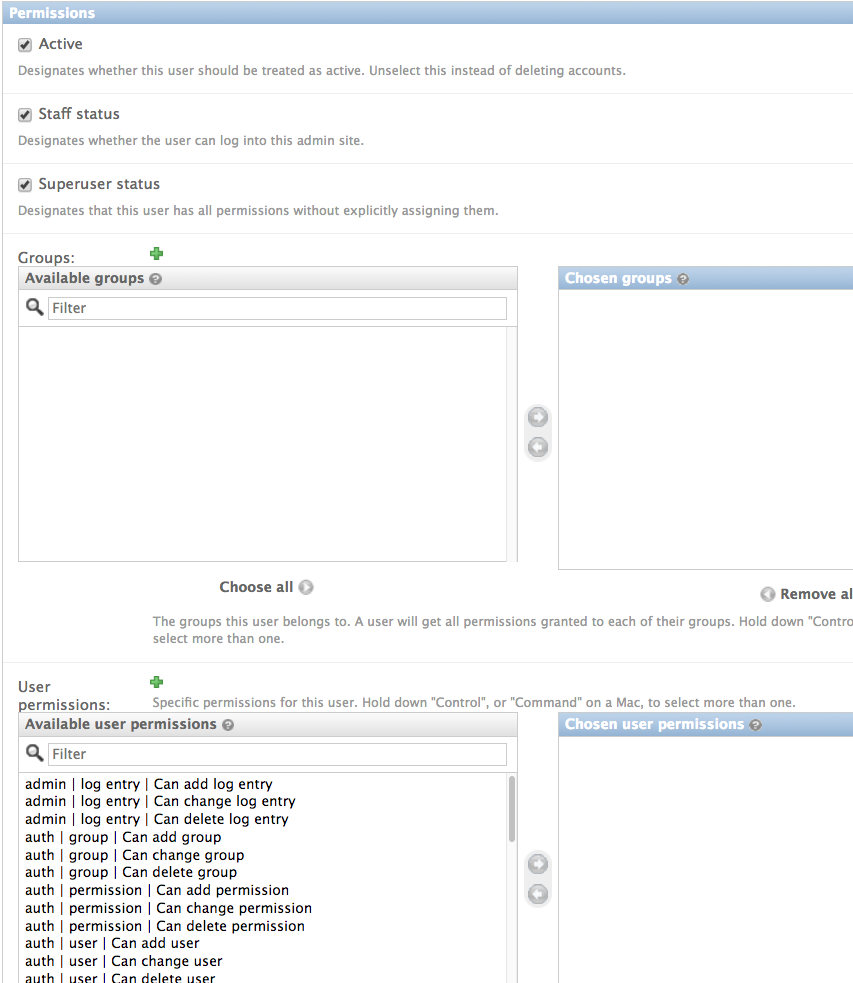

Users and Persmissions
Django Admin Site
The Django admin comes with user and permissions functionality.
URL - /api/admin

User Creation
The users are stored locally and passwords are stored within the database. Django comes with many different modules to extend the authentication functionality.
URL - /api/admin/auth/user/

Permissions
The cyberCommons RESTful api provides permissions and groups:
Data Catalog
Catalog Creation
Catalog Admin
Create Catalog Collections
Collection Permissions
Add Permissions
Update Permission
Safe Methods (Read) Permissions
Data Store
Catalog Creation
Data Store Admin
Create Database and Collections
Database and Collection Permissions
Add Permissions
Update Permission
Safe Methods (Read) Permissions
